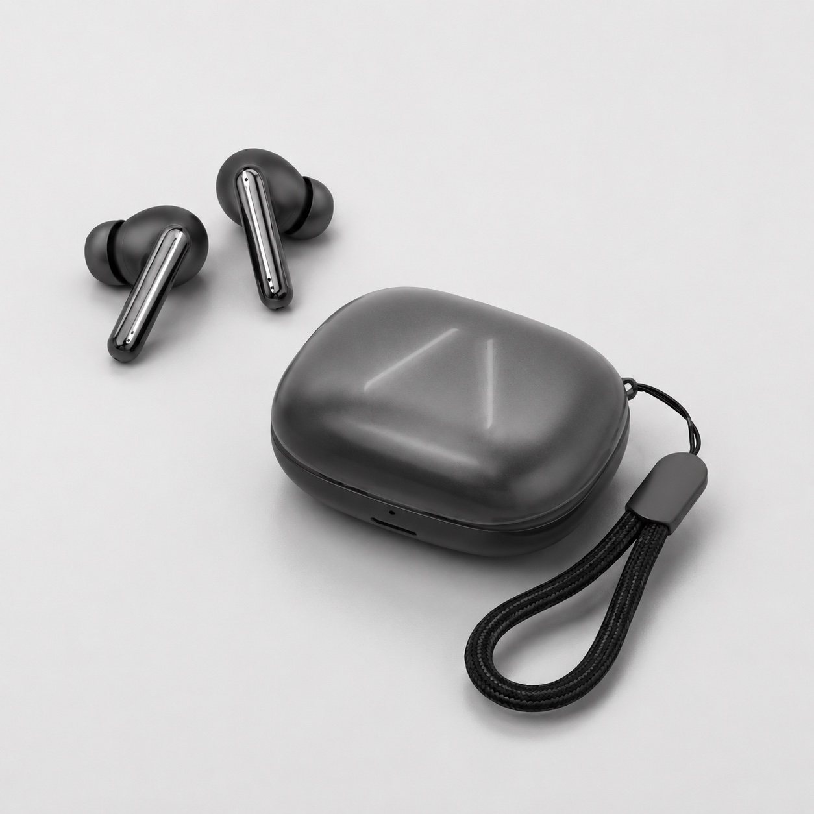
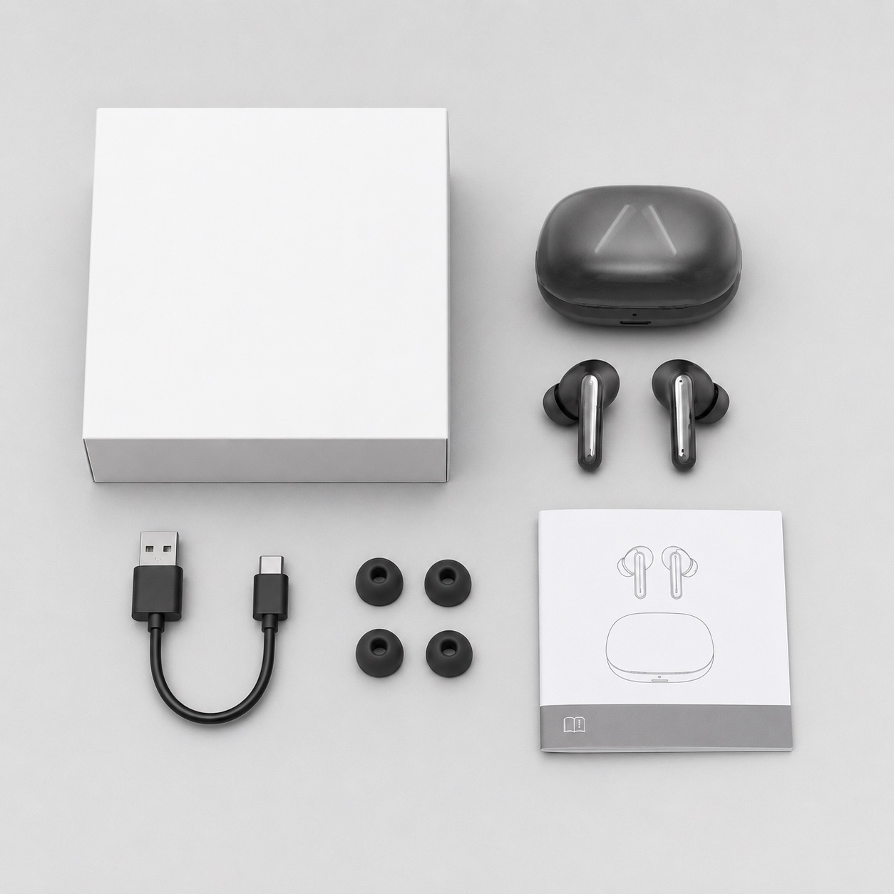
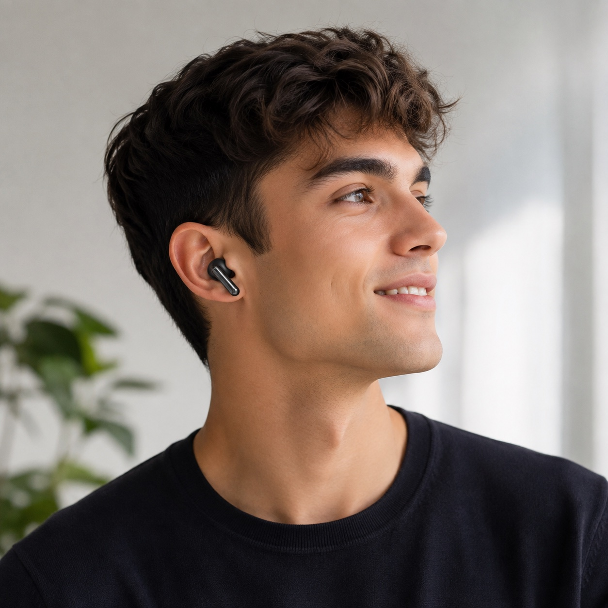
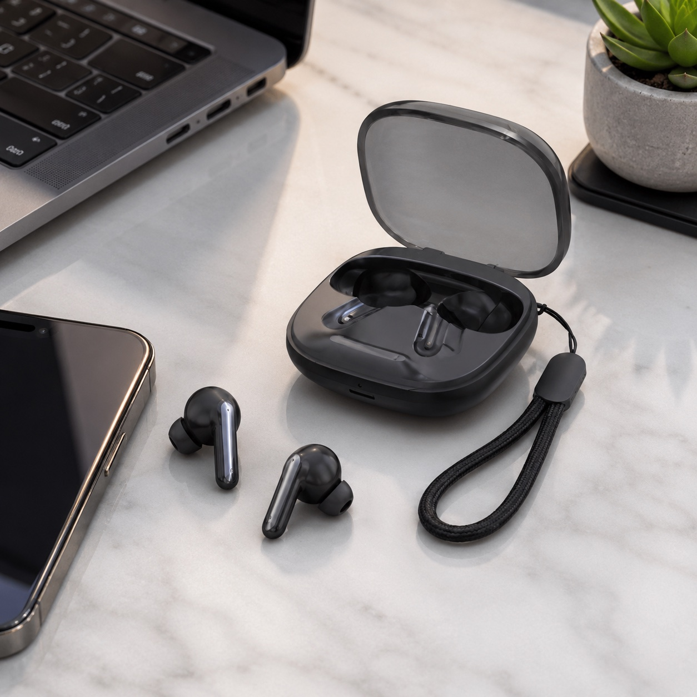

Case and earbuds overview
Use this view to confirm overall appearance, in-ear direction and charging-case presentation.

In-ear TWS sample
A compact in-ear TWS earbud direction for importers, distributors and private-label teams comparing wearing fit, charging-case style, supplied product images, packing-list details and RFQ questions before sample selection.
Product evidence
Use these supplied visuals to discuss product shape, wearing fit, charging case, strap detail, lifestyle use and packing-list contents before requesting a physical sample.
Use this view to confirm overall appearance, in-ear direction and charging-case presentation.

Open-case images support charging-case finish, hinge, storage and strap discussion.

Closed-case and earbud views help buyers compare retail photography and product-line style.

Use the flatlay as a starting point, then confirm final included items against the selected sample version.

Wearing images help buyers judge fit direction, visible profile and lifestyle use case.
Outdoor visuals help e-commerce and retail buyers discuss product photography direction.

Lifestyle images support private-label content planning after the model and sample are confirmed.
Buyer notes
TWS044F gives the TWS category a compact in-ear option beside open-ear and earclip directions such as Earclip09S.
Sample checklist
Review in-ear comfort, visible profile, stability and whether the form matches the intended buyer channel.
Check case finish, opening feel, storage direction, strap detail and indicator behavior on the actual sample.
Confirm microphone and call scenario against the sample before making any public call-performance claim.
Ask for the selected sample version's battery and charging details before using exact values in listing content.
Confirm earbuds, charging case, cable, manual language, retail box and any optional items before artwork.
Share target market, sales channel, preferred quantity range, sample timing, color direction and branding needs.
Sample path
Use this model page as the in-ear reference, then connect the sample discussion to the broader TWS comparison and final inquiry path.
Model comparison
| Direction | Best used when buyers need | Sample review focus |
|---|---|---|
| TWS044F in-ear TWS | A compact, familiar TWS earbud form for retail, e-commerce or private-label audio ranges. | Wearing fit, charging case, packing list, color direction, call-use expectations and packaging. |
| Earclip09S open-ear TWS | An open-ear or earclip direction with a different comfort and lifestyle angle. | Earclip comfort, leakage, call clarity, case behavior, color options and packing-list details. |
Product FAQ
TWS044F is positioned as an in-ear TWS earbud direction for importers and private-label buyers comparing compact earbuds, charging-case design, wearing fit, packing list and sample discussion details.
Buyers can compare TWS044F as an in-ear direction with Earclip09S as an open-ear or earclip direction. Wearing style, charging case, call-use expectations, packaging and RFQ details should be reviewed against the selected sample.
Yes. Logo, color direction, manual language, retail box direction and package contents can be discussed after the base model and sample version are clear.
Include destination market, sales channel, preferred wearing style, quantity range, sample timing, branding needs, packaging direction and any document or feature questions.
Check in-ear fit, case opening and storage, charging behavior, call-use expectations, packing-list contents, branding area, packaging direction and any document or feature questions for the selected sample version.
Related pages
Share your target market, sales channel, color direction, sample timing and packaging questions so TALRIVO can prepare a clearer TWS044F sample discussion.